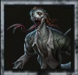
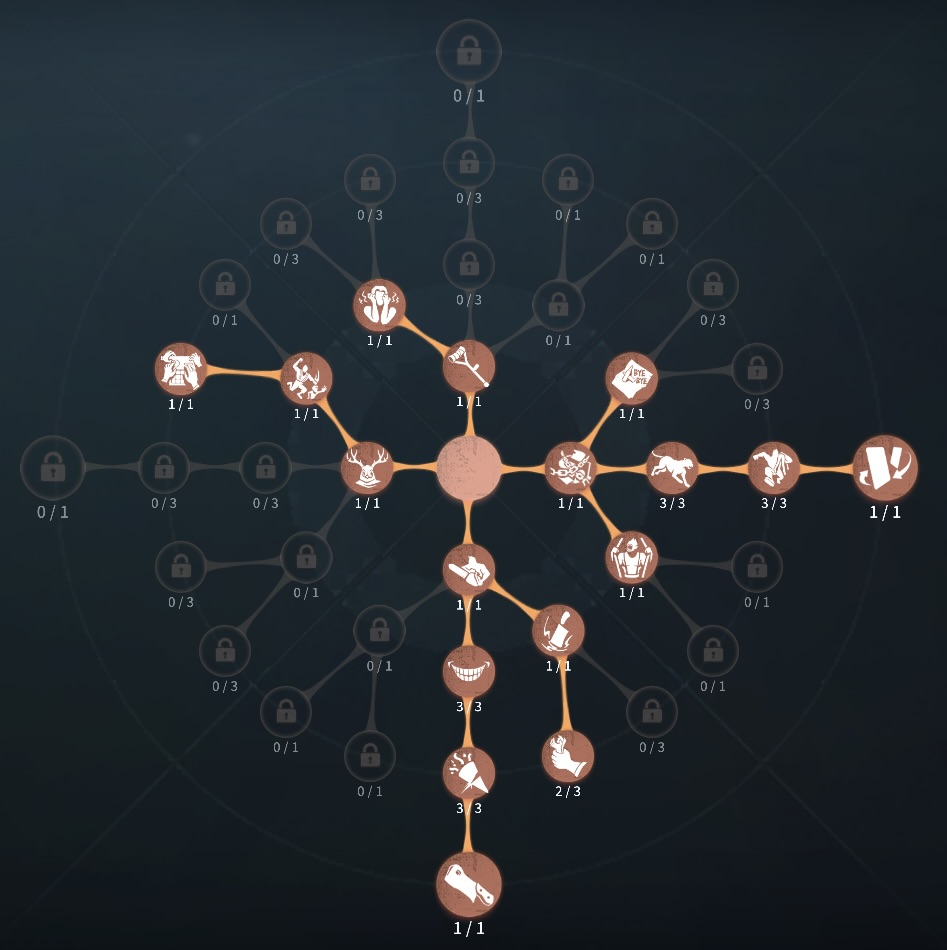
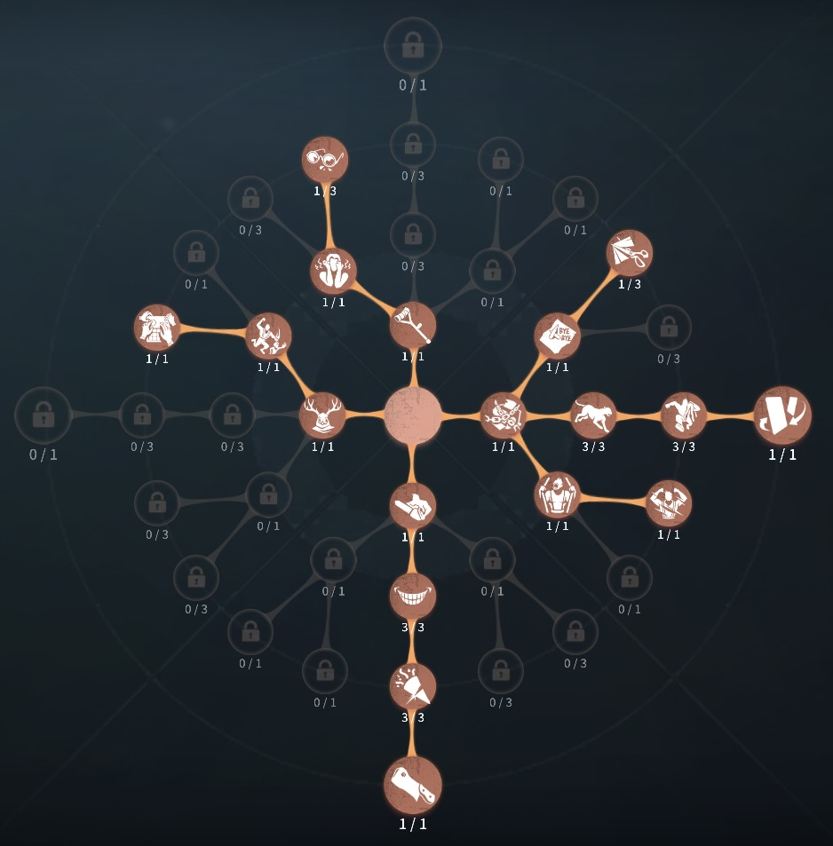

魔トカゲ（ルキノ）の評価
ジャンプで好きなポジションまでひとっとび
外在特質とスキル
特質1:呪われた体
・ハンタージャンプをするたびに体力を消費する。体力は毎秒1ずつ回復。存在感0：ハンタージャンプ、落下
・ハンタージャンプ地面につく前であれば2回までジャンプできる。障害物にあたると落下し、体力は消耗するがハンタージャンプのクールタイムは発生しない。
・落下
ジャンプ中に自ら垂直落下することができる。
存在感1：落下攻撃
・ジャンプ中や高所から落下で空中にいる場合使用でき、垂直落下し範囲内のサバイバーすべてに1ダメージを与える。また範囲内の板を破壊できる。存在感2：熱狂、蛇の化け物
・熱狂ハンタージャンプのジャンプ回数が無限になる。
・蛇の化け物
落下攻撃の落下速度が上昇する。
ハンターの立ち回り方
1. 初動の立ち回り
魔トカゲは
「ジャンプ」と「落下攻撃」を駆使してサバイバーを追い詰めるハンターです。序盤から素早くサバイバーを発見し、ジャンプを使って位置取りをし、ファーストチェイスに備えましょう。
・試合開始直後の行動:
✅ サバイバーのスポーン位置を予測してすぐにジャンプで移動
→ 初動からジャンプを活かし、サバイバーに早急に圧をかける。
✅ 存在感が貯まるまで、通常攻撃でしっかり戦う
→
初動でジャンプを多用しすぎると体力を無駄に消費するため、通常攻撃で無理に攻めず、存在感を貯める。
✅ ジャンプフェイントを活用する
→
サバイバーに予測させるために、ジャンプで先回りし、行き先を変更させる。
2. ジャンプの使い方
魔トカゲの「落下攻撃」は強力な武器ですが、ただし、無理に当てようとして体力を消耗しないように注意が必要です。
・落下攻撃の基本操作:
✅
サバイバーの位置を予測し、ジャンプ後に上手く落下攻撃を仕掛ける
→
サバイバーの逃げ道を予測し、ジャンプで先回りした後、落下攻撃で圧をかける。
✅ サバイバーのフェイントに合わせる
→
サバイバーが回避のためにフェイントをかけるタイミングに合わせて落下攻撃を狙う。
✅ 無理に攻撃しない
→ 落下攻撃を外した場合、すぐに通常攻撃で追撃する。
3. チェイス中の立ち回り
魔トカゲはジャンプによる先回りと落下攻撃でサバイバーを圧倒するハンターです。
・ジャンプフェイントでサバイバーの予測を狂わせる:
→
まずサバイバーの動きを予測し、その進行方向にジャンプして先回りし、サバイバーを別の方向へ誘導。
・落下攻撃を狙う:
→
サバイバーが窓や板を使おうとするタイミングで落下攻撃を狙う。
・ジャンプキャンセルを活用:
→
180度ジャンプや直角ジャンプを使い、サバイバーが予測しづらい動きを見せる。
4. 救助狩りの立ち回り
魔トカゲはジャンプと落下攻撃を使った救助狩りが得意です。
・サバイバーの接近を予測:
→
サバイバーが救助に向かう方向を予測してジャンプで先回りし、落下攻撃を使う。
・ジャンプ後の追撃:
→ 落下攻撃を外した場合、すぐに通常攻撃で追い詰める。
・救助狩りの成功を高める:
→
監視者や狂暴、枯死などを使い、サバイバーの救助行動を封じる。
5. 注意点
魔トカゲを使う際には、以下の点に注意しましょう。
🔹 ジャンプの無駄打ちに注意
→
落下攻撃が外れた後、すぐに通常攻撃でカバーすることを意識する。
🔹 ジャンプと落下攻撃のタイミング
→
サバイバーの動きに合わせてジャンプ・落下攻撃を使う。無駄にジャンプを繰り返さない。
🔹 救助狩り時の読み合い
→
救助が来るタイミングを予測し、ジャンプで先回りして攻撃を仕掛ける。
おすすめの内在人格
裏向きカードペンチ型人格
この内在人格は、ペンチで解読機によせ解読遅延をかけれない魔トカゲの弱点を補い、幽閉の恐怖でゲートを守れる魔トカゲの特性を生かしつつ、パニック＆悪化で解読を遅くした人格

裏向きカード指名手配型人格
この内在人格は、指名手配で中間位置で殴り落下スキルで救助狩りを狙い、幽閉の恐怖でゲートを守れる魔トカゲの特性を生かしつつ、パニック＆悪化で解読を遅くした人格


みんなのコメント